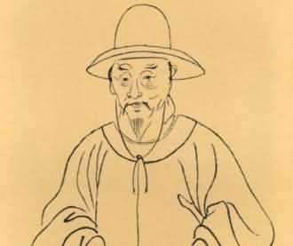
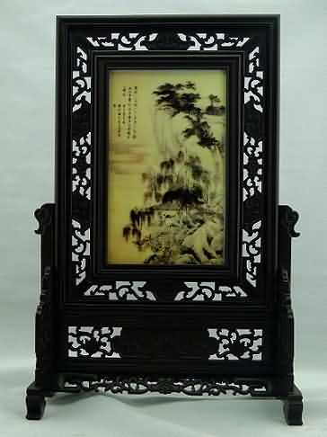

唐寅，字伯虎，苏州吴县人，一字子畏，号六如居士、桃花庵主等，明代著名画家、文学家。唐伯虎玩世不恭而又才气横溢，诗文擅名，与祝允明、文征明、徐祯卿并称"江南四大才子（吴门四才子）"，画名更著，与沈周、文征明、仇英并称"吴门四家"，又称为"明四家"。他擅山水、人物、花鸟，其山水早年随周臣学画，后师法李唐、刘松年，加以变化，画中山重岭复，以小斧劈皴为之，雄伟险峻，而笔墨细秀，布局疏朗，风格秀逸清俊。人物画多为仕女及历史故事，师承唐代传统，线条清细，色彩艳丽清雅，体态优美，造型准确；亦工写意人物，笔简意赅，饶有意趣。其花鸟画，长于水墨写意，洒脱随意，格调秀逸。除绘画外，唐寅亦工书法，取法赵孟頫有《落霞孤鹜图》、《骑驴归思图》、《山路松声图》、《事茗图》、，书风奇峭俊秀。《王蜀宫妓图》、《李端端落籍图》、《临水芙蓉图》、《秋风纨扇图》、《百美图》、《看泉听风图》、《牡丹仕女图》、《吹箫图》、《杏花茅屋图》等绘画作品传世。
《落霞孤鹜图》此画描绘的是高岭峻柳，水阁临江，有一人正坐在阁中，观眺落霞孤鹜，一书童相伴其后，整幅画的境界沉静，蕴含文人画气质。画家自题云"画栋珠帘烟水中，落霞孤鹜渺无踪。千年想见王南海，曾借龙王一阵风。"表示他羡慕《滕王阁序》作者王勃的少年得志，为自己坎柯的遭遇鸣不平。在表现技法上，近景的山石多用湿笔皴擦，勾斫相间，用墨较重。全画墨色和悦润泽，景物处理洗练洒脱。